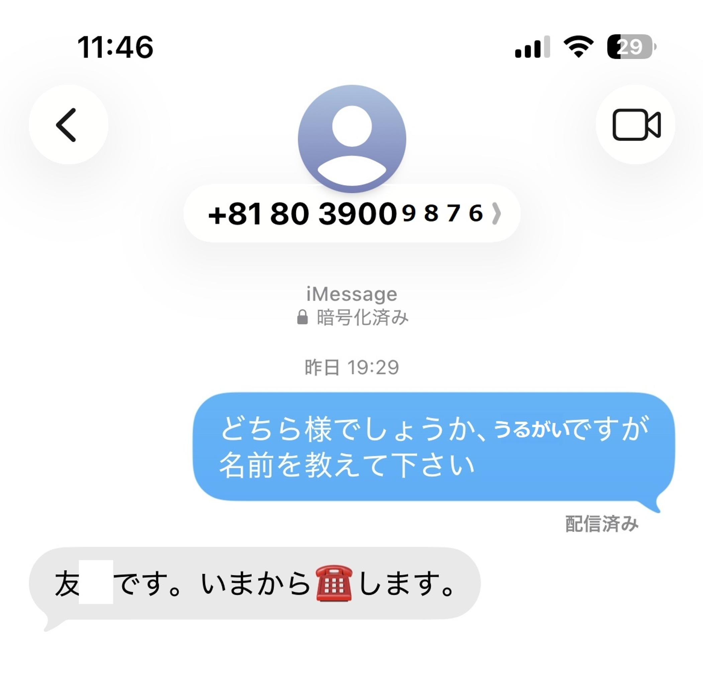

うるがいの話 ある日
最新: ＳＭＳを利用する【うるがいの話 ある日】とは 一日だけのプログです
『うるがいの話』の最新一日だけのプログで、通信料が少なく経済的だ。カニの画像をクリックすると全ての日付が載る『うるがいの話』サイトを表示します
|
|
【うるがいの話】 うるがい(ｳﾙｶﾞｲ urugai)とは、『もずくがに』の名前でとても大きくなります。 |
|---|---|
|
|
【カミマヤーの話】 猫のことを方言でマヤーといいます。カミマヤー（kamimayaa）とは、神の猫のことです。 |
|
【たながぁの音楽】 たながぁ（ﾀﾅｶﾞｰ tanagaa）とは手長えびのことで、何種類かあり大きいのは車 エビぐらいになります。 |

|
【ぶながぁの話】 ぶながぁ(ﾌﾞﾅｶﾞｰ bunagaa)とは、赤い髪の毛、赤い身体、そして身長は１ｍ２０ｃｍ ぐらい、川の蟹を食べているの目撃された。場所は沖縄県国頭郡大宜味村のと ある村僕の隣近所に住んでいる爺さんから、聞いた話です。 |
|
|
【ギーマの話】 ギーマ(giima)とは、山原の里山に咲くスズランに似た、 花を付けます。実は食べられます、 気が付くと口の周りが紫になっています。 |
2026年11月14日 (土）ＳＭＳを利用する
16:48
３日間、夜６時から７時の間に電話が続いた。はて？、誰かし
ら、留守番電話に要件を残してくれたらいいのに。仕方ないこ
ちらから、ＳＭＳをするか

ＳＭＳを送ったあと、暫くしてお椀を洗っていると電話が、な
った（補聴器から）。留守番電話してくれたらいいのにと伝え
ると『そんな機能は使えない』と言う。高校の同級生会の場所
と日時を伝えたかったようだ。国頭村奥間、遠いな。
昨日の続き、麻酔をかけてもらったけど（顔面の左下は痺れた
状態）、痛い！。４０分程で終了、先生の説明あり。痛みが無
ければ神経とるのですが、神経を麻痺させる薬を入れています
。徐々に、痛みがひいてくる筈です。と、家に戻るとたしかに
続いていた痛みは、なくなってきている。顔面のしびれは、ま
だあるが。来週また、通院っす。